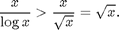

Question 12, Section 3.2
By David Dobor, CIS 2166 Recitation 2.
Recall the solution to this problem that we did on board. In that solution we showed that
is not 
We showed this by assuming the above to be true and arriving at a contradiction. We said that if the above claim were true, then we would be able to find constants and such that
for all (we divided the inequality from the Big-O definition by , which we can do since is assumed to be positive).
But the above could not hold true because  is an anbounded function of that would exceed any given constant .
is an anbounded function of that would exceed any given constant .
We in turn justified the fact that is unbounded by noting that for sufficiently large (whenever ) we have
and therefore

From this it immediately followed that is unbounded since is clearly unbounded.
Now, here is a plot showing that
whenever
x = linspace(1, 60, 500); y1 = log2(x); y2 = sqrt(x); plot(x,y1, 'b', x, y2, 'g', 'linewidth', 2) title('Demo that $$\sqrt x$$ eventually exceeds $$\log x$$','interpreter','latex') legend({'log x', '$\sqrt x$'},'Location','northwest','interpreter','latex') x = linspace(1, 60, 500); y1 = log2(x); y2 = sqrt(x); plot(x,y1, 'b', x, y2, 'g', 'linewidth', 2) title('Demo that $$\sqrt x$$ eventually exceeds $$\log x$$','interpreter','latex') legend({'log x', '$\sqrt x$'},'Location','northwest','interpreter','latex')
Optional Exercise
Plot
Does it appear unbounded?
This is all we need to know to conclude that
is not
Solution to Optional Exercise
x = linspace(1, 50, 500); y = x ./ log2(x); plot(x,y, 'linewidth', 2) title('Plot of $$ y = \frac{x} { \log x }$$','interpreter','latex')